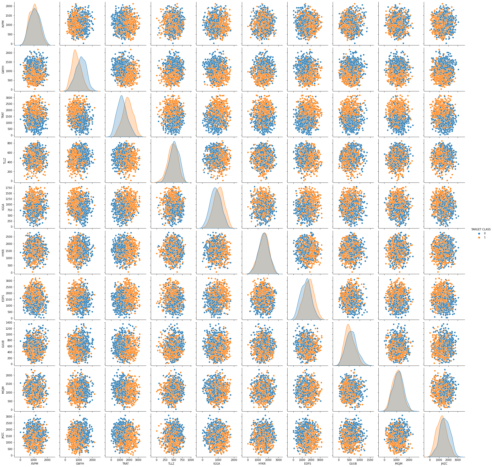
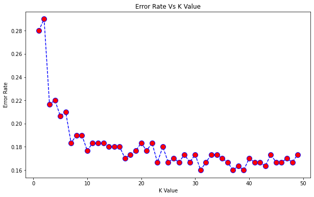

K Nearest Neighbors Project
Welcome to the KNN Project! This will be a simple project implementing the K Nearest Neighbors Algorithm. Go ahead and just follow the directions below.
Import Libraries
Import pandas,seaborn, and the usual libraries.
import pandas as pd
import numpy as np
import seaborn as sns
import matplotlib.pyplot as plt
%matplotlib inline
Get the Data
** Read the 'KNNProjectData csv file into a dataframe **
df = pd.read_csv('KNN_Project_Data')
Check the head of the dataframe.
df.head()
| XVPM | GWYH | TRAT | TLLZ | IGGA | HYKR | EDFS | GUUB | MGJM | JHZC | TARGET CLASS | |
|---|---|---|---|---|---|---|---|---|---|---|---|
| 0 | 1636.670614 | 817.988525 | 2565.995189 | 358.347163 | 550.417491 | 1618.870897 | 2147.641254 | 330.727893 | 1494.878631 | 845.136088 | 0 |
| 1 | 1013.402760 | 577.587332 | 2644.141273 | 280.428203 | 1161.873391 | 2084.107872 | 853.404981 | 447.157619 | 1193.032521 | 861.081809 | 1 |
| 2 | 1300.035501 | 820.518697 | 2025.854469 | 525.562292 | 922.206261 | 2552.355407 | 818.676686 | 845.491492 | 1968.367513 | 1647.186291 | 1 |
| 3 | 1059.347542 | 1066.866418 | 612.000041 | 480.827789 | 419.467495 | 685.666983 | 852.867810 | 341.664784 | 1154.391368 | 1450.935357 | 0 |
| 4 | 1018.340526 | 1313.679056 | 950.622661 | 724.742174 | 843.065903 | 1370.554164 | 905.469453 | 658.118202 | 539.459350 | 1899.850792 | 0 |
EDA
Since this data is artificial, we'll just do a large pairplot with seaborn.
Use seaborn on the dataframe to create a pairplot with the hue indicated by the TARGET CLASS column.
sns.pairplot(df, hue='TARGET CLASS')
<seaborn.axisgrid.PairGrid at 0x7fa9b6f33b90>

Standardize the Variables
Time to standardize the variables.
** Import StandardScaler from Scikit learn.**
from sklearn.preprocessing import StandardScaler
** Create a StandardScaler() object called scaler.**
scaler = StandardScaler()
** Fit scaler to the features.**
scaler.fit(df.drop('TARGET CLASS', axis=1))
StandardScaler(copy=True, with_mean=True, with_std=True)
Use the .transform() method to transform the features to a scaled version.
scaled_features = scaler.transform(df.drop('TARGET CLASS', axis=1))
Convert the scaled features to a dataframe and check the head of this dataframe to make sure the scaling worked.
df_features = pd.DataFrame(data=scaled_features, columns=df.columns[:-1])
df_features.head()
| XVPM | GWYH | TRAT | TLLZ | IGGA | HYKR | EDFS | GUUB | MGJM | JHZC | |
|---|---|---|---|---|---|---|---|---|---|---|
| 0 | 1.568522 | -0.443435 | 1.619808 | -0.958255 | -1.128481 | 0.138336 | 0.980493 | -0.932794 | 1.008313 | -1.069627 |
| 1 | -0.112376 | -1.056574 | 1.741918 | -1.504220 | 0.640009 | 1.081552 | -1.182663 | -0.461864 | 0.258321 | -1.041546 |
| 2 | 0.660647 | -0.436981 | 0.775793 | 0.213394 | -0.053171 | 2.030872 | -1.240707 | 1.149298 | 2.184784 | 0.342811 |
| 3 | 0.011533 | 0.191324 | -1.433473 | -0.100053 | -1.507223 | -1.753632 | -1.183561 | -0.888557 | 0.162310 | -0.002793 |
| 4 | -0.099059 | 0.820815 | -0.904346 | 1.609015 | -0.282065 | -0.365099 | -1.095644 | 0.391419 | -1.365603 | 0.787762 |
Train Test Split
Use traintestsplit to split your data into a training set and a testing set.
X = df_features
y = df['TARGET CLASS']
from sklearn.model_selection import train_test_split
X_train, X_test, y_train, y_test = train_test_split(X, y, test_size=0.3, random_state=101)
Using KNN
Import KNeighborsClassifier from scikit learn.
from sklearn.neighbors import KNeighborsClassifier
Create a KNN model instance with n_neighbors=1
knn = KNeighborsClassifier(n_neighbors=1)
Fit this KNN model to the training data.
knn.fit(X_train, y_train)
KNeighborsClassifier(algorithm='auto', leaf_size=30, metric='minkowski',
metric_params=None, n_jobs=None, n_neighbors=1, p=2,
weights='uniform')
Predictions and Evaluations
Let's evaluate our KNN model!
Use the predict method to predict values using your KNN model and X_test.
predictions = knn.predict(X_test)
** Create a confusion matrix and classification report.**
from sklearn.metrics import classification_report, confusion_matrix
print(confusion_matrix(y_test, predictions))
[[109 43]
[ 41 107]]
print(classification_report(y_test, predictions))
precision recall f1-score support
0 0.73 0.72 0.72 152
1 0.71 0.72 0.72 148
accuracy 0.72 300
macro avg 0.72 0.72 0.72 300
weighted avg 0.72 0.72 0.72 300
Choosing a K Value
Let's go ahead and use the elbow method to pick a good K Value!
** Create a for loop that trains various KNN models with different k values, then keep track of the error_rate for each of these models with a list. Refer to the lecture if you are confused on this step.**
error_rate = []
for i in range(1, 50):
knn = KNeighborsClassifier(n_neighbors=i)
knn.fit(X_train, y_train)
predict_i = knn.predict(X_test)
error_rate.append(np.mean(predict_i != y_test))
Now create the following plot using the information from your for loop.
plt.figure(figsize=(10,6))
plt.plot(range(1,50), error_rate, color='blue', linestyle='dashed', marker='o', markerfacecolor='red', markersize=10)
plt.title('Error Rate Vs K Value')
plt.xlabel('K Value')
plt.ylabel('Error Rate')
Text(0, 0.5, 'Error Rate')

Retrain with new K Value
Retrain your model with the best K value (up to you to decide what you want) and re-do the classification report and the confusion matrix.
knn = KNeighborsClassifier(n_neighbors=38) #K = 38
knn.fit(X_train, y_train)
predictions = knn.predict(X_test)
print(confusion_matrix(y_test, predictions))
print(classification_report(y_test, predictions))
[[126 26]
[ 23 125]]
precision recall f1-score support
0 0.85 0.83 0.84 152
1 0.83 0.84 0.84 148
accuracy 0.84 300
macro avg 0.84 0.84 0.84 300
weighted avg 0.84 0.84 0.84 300